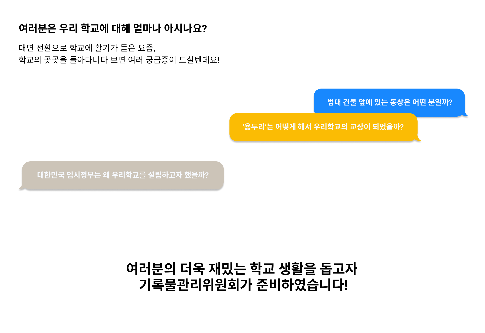

기록물관리위원회란?
기록물관리위원회는 총학생회를 비롯한 학생사회 전반의 기록을
수집·보존·평가·활용에 관한 사무를 총괄하며 잊혀져갔던 공동의
기억을 보존하고, 학생회 활동 전반에 설명책임성을 확보하는데
그 목적을 두고 있습니다.
기록물관리위원회는
총학생회를 비롯한 학생사회 전반의 기록을
수집·보존·평가·활용에 관한 사무를 총괄하며
잊혀져갔던 공동의 기억을 보존하고,
학생회 활동 전반에 설명책임성을
확보하는데 그 목적을 두고 있습니다.

 kmuarchives@kookmin.ac.kr
kmuarchives@kookmin.ac.kr